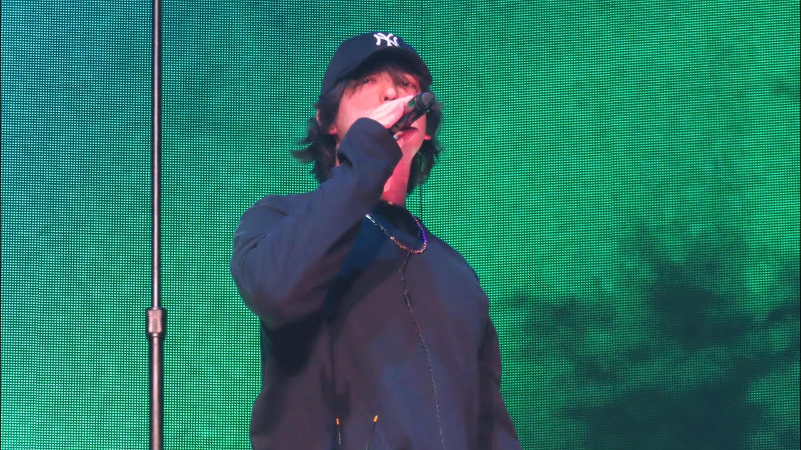

Joji, nama asli George Kusunoki Miller, lahir di Osaka, Jepang pada 18 September 1992. Sebelum dikenal sebagai musisi, Joji memulai karirnya di internet dengan nama panggung "Filthy Frank" dan "Pink Guy", yang terkenal dengan konten komedi absurd di YouTube.
Pada tahun 2017, Joji memutuskan untuk meninggalkan dunia YouTube dan fokus ke musik. Keputusannya ini membuahkan hasil besar ketika ia merilis karya-karya dengan nuansa R&B, lo-fi, dan soul. Musiknya dikenal emosional, melankolis, namun penuh keindahan.
Joji menggabungkan elemen-elemen R&B, soul, lo-fi hip hop, dan indie. Suaranya yang khas serta lirik-lirik penuh perasaan membuatnya menjadi ikon baru di dunia musik alternatif.
Kini, Joji terus berkarya dengan menciptakan musik yang menyentuh hati jutaan pendengar di seluruh dunia.